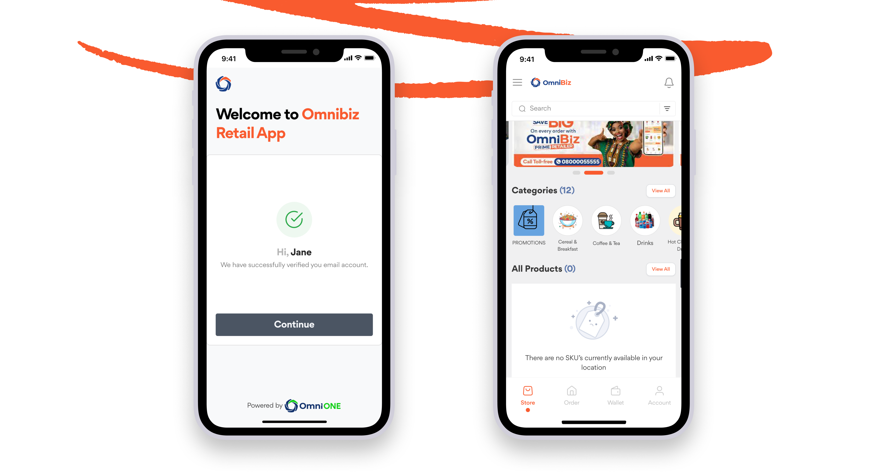
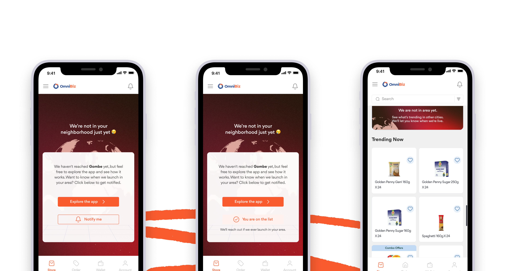
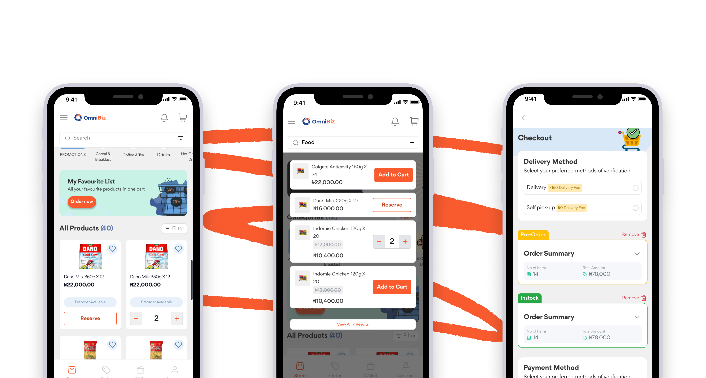

OmniRetail / Omnibiz · Product Design
Making "Not Here Yet" Feel Like A Preorder, Not A Dead End
Omnibiz operates across a growing set of countries, but not every country yet, and not every product in every country it does operate in. Two moments kept producing the same dead end: a retailer switches their location to a market Omnibiz hasn't launched in yet, or browses a product that isn't live in their specific region. Both defaulted to an empty catalog with nothing to do next. For a retailer base already past 150K, that's a lot of silent demand going unmeasured.
Two Different Dead Ends
Unserved Market
A retailer changes their location to a country Omnibiz doesn't operate in yet. The catalog comes back empty, no products, no explanation, no path forward. It reads like a bug, not a "not yet."
Unavailable-In-Region Product
A specific product isn't live in the retailer's region, even though Omnibiz operates there. The default instinct was to hide it entirely, which keeps the catalog clean but throws away a real signal: someone wanted that product, here, now.
Constraints
- 01 One Primary Action A retailer who just hit a wall doesn't need five options, they need the one that gets them unstuck.
- 02 Two Distinct Messages "We're not in your country yet" is a different promise than "this product isn't in your region yet."
- 03 A Real Demand Signal Any interest captured (a preorder, a notify-me) had to feed something real internally, not a UI dead end with no backend meaning.
- 04 Inside The Existing IA Had to work inside Omnibiz's existing retailer-app IA, not as a bolted-on separate flow.
The Design
Two different fixes for two different dead ends: a direct statement with one action for a market Omnibiz hasn't reached yet, and an honest, still-discoverable preorder for a product that isn't live in the retailer's region yet.
Before · Initial Unserved Market State
A blank catalog with no products, no explanation, and no path forward.

After · "Notify Me"
A direct statement that Omnibiz isn't in this market yet, and one action: get notified at launch.

Unavailable-In-Region · Preorder
Kept the product visible in the catalog rather than hiding it, marked clearly as preorder with the regions it's currently live in, and gave a single "Reserve this" action. The product stays discoverable; the unavailability is honest rather than hidden.

The One Decision
I chose to keep out-of-region products visible and preorderable rather than hide them, even though hiding them would have made the catalog feel more "finished" and consistent, every visible product actually purchasable. I traded that cleanliness for a persistent demand signal: every preorder is a data point on where Omnibiz should expand next or prioritize sourcing, which a hidden product can never generate. A tidier catalog was worth less to the business than a live map of unmet demand.
What I'd Measure

Preorder Volume
Signups per unavailable product/region, the core demand signal this design exists to generate.
Confusion Rate
Support tickets asking "why can't I buy this", a sign the preorder framing isn't reading as intended.
Preorder-To-Purchase
% of preorders that convert once the product actually goes live in that region, the real test of whether intent was genuine.
What Would Prove This Wrong
If preorder conversion stayed near zero and retailers found visible-but-unavailable listings confusing rather than informative, that would mean the demand-signal bet was wrong for this audience, and hiding unavailable products behind a separate, opt-in "notify me about new markets" flow would have been the better call.
Reflection
The instinct with empty states is usually to make them feel less empty, an illustration, a friendly line of copy. The actual fix here had nothing to do with charm: it was recognizing that "we don't have this" and "we don't have this yet" are different promises, and that an empty state can double as a lead-generation surface for expansion decisions if you design the intent capture deliberately instead of defaulting to a blank grid.
Status: Real feature area within the OmniBiz Retailer App at OmniRetail (Omnibiz), not a hypothetical brief.
Other Projects